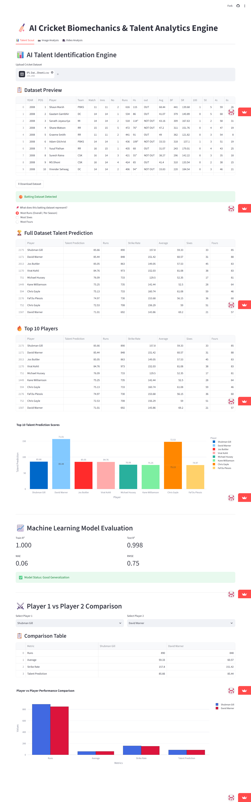

Final-year Information Science Engineering student with practical experience in Software Development, Machine Learning, Deep Learning, and Computer Vision through hands-on projects. Familiar with Python, Java, SQL, OpenCV, Flask, and Streamlit, with an intermediate understanding of Data Structures & Algorithms and core computer science concepts. Passionate about building scalable applications, solving real-world problems, and continuously improving my technical expertise. Seeking opportunities as a Software Development Engineer (SDE), Data Scientist, Machine Learning Engineer, or AI Engineer to contribute, learn, and grow.
Languages: Java, Python, Javascript, HTML, CSS
AI/ML: Scikit-learn, OpenCV, MediaPipe, Pandas, NumPy
Frameworks: Flask, Streamlit
Databases: MySQL, MongoDB
Core CS Subjects: Data Structures & Algorithms, OOP, DBMS, Operating Systems.
Tools: Git, GitHub, VsCode
Tech Used: Python, Streamlit, Scikit-Learn, OpenCV, MediaPipe, NumPy, Pandas, Plotly
Live Demo: CricketVision AI Live Demo | Code: GitHub Repo

Tech Used: Python, Flask, Flask-CORS, Radon, Gunicorn, HTML/CSS/JavaScript
Live Demo: CodeAudit AI Live Demo | Code: GitHub Repo
Let's connect! Feel free to reach out for opportunities, collaborations, or just to say hello.